Semestre 5
Implementación de framework
Para la implementación del proyecto se tomo la decisión del manejo del framework Java Server Faces por las siguientes cualidades:
- Mejor manejo en lenguaja tipo java
- Manejo de POO (Programación orientda a objetos)
- Facil manejo de entidades de la base de datos
- Manejo de eventos en la página
- Definir un esquema de navegación
- Es fácil de comprender
- Accesible
JAVA Server Faces - MVC (arquitectura)
Driver
En este paso se empieza realizando la conexión de la base de datos desde la
herramienta de Netbeans
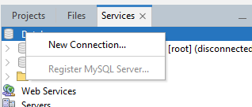
Se crea un nuevo Driver previamente descargado en este caso se usa el
destinado a MySQL
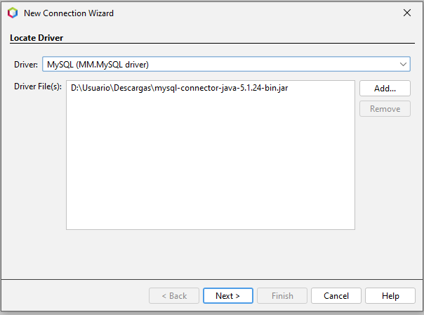
Ahora colocar las credenciales las cuales se tienen acceso a la base de
datos, en este caso es root
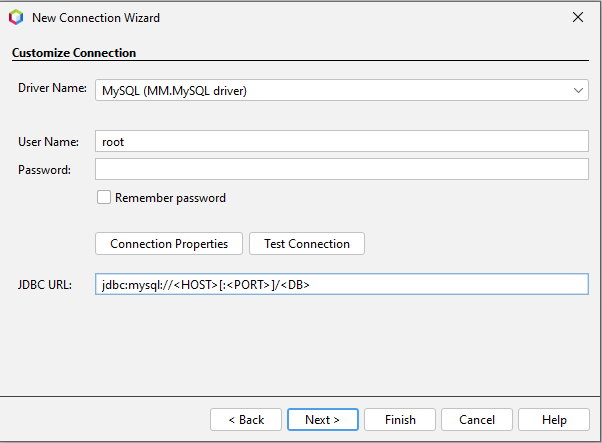
En el apartado JDBC se colocar el HOST y el puerto donde está conectado, con
el nombre de la base de datos más el parámetro “useSSL=false” y por último
se prueba la conexión “TEST CONNECTION”.

En el siguiente apartado se cambia el input de la conexión con el nombre de
la base de datos en este caso TCE
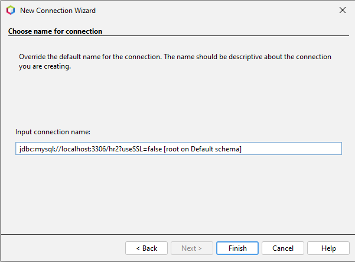
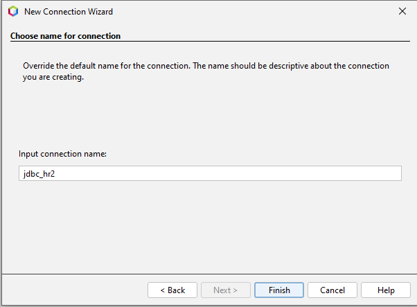
Se completa la conexión:
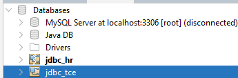
En este apartado se crea un proyecto tipo Maven, se debe verificar que este
usando el server Glass Fish, use el JDK 1.8 y por último se agrega el
framework al proyecto, primer paso ir a las propiedades del proyecto
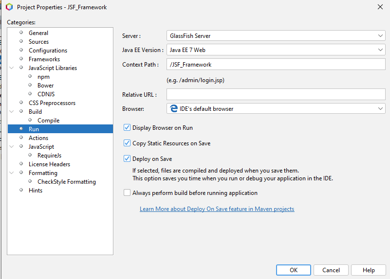
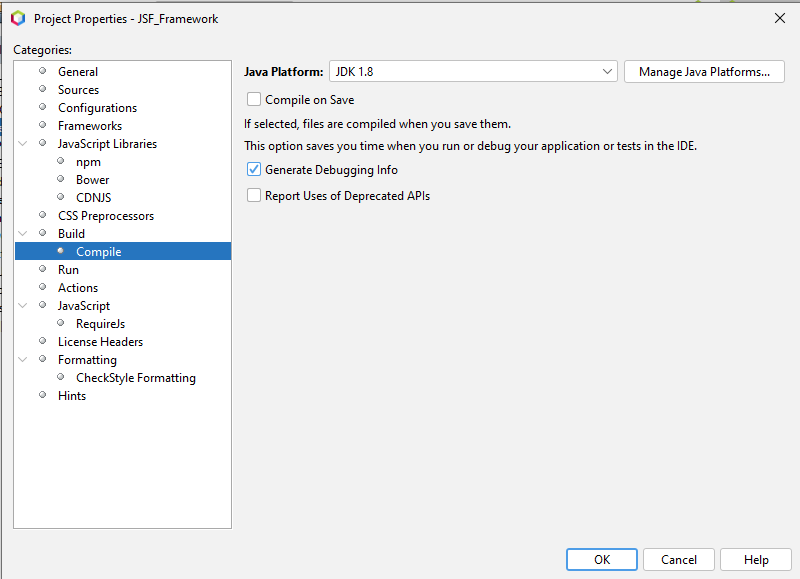
Para agregar el framework se selecciona en "Add" y escogemos "JavaServer
Faces".
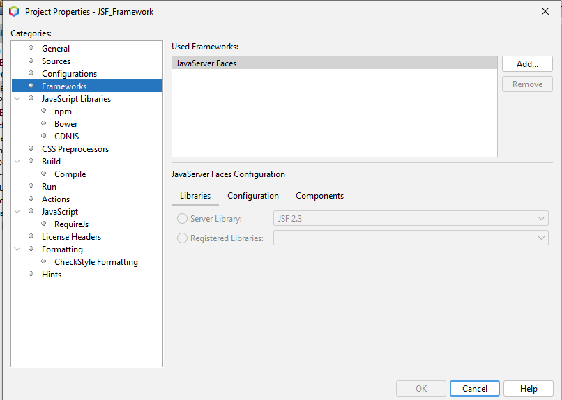
En el apartado de “Libraries” se selecciona “Server Library” y en
“Configuration” se borra todo y se coloca “*.xhtml”:
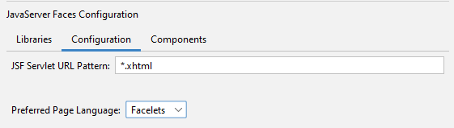
En el apartado de “Services” y “Server” hacemos clic derecho agregar
servidor, se escoge GlassFish
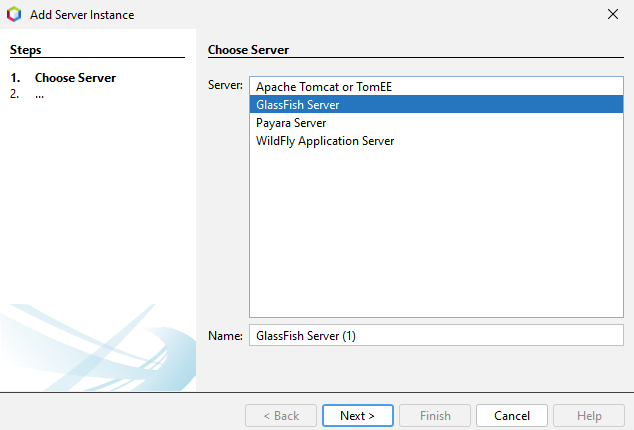
Luego se escoge la versión de este servidor a descargar, se seleccionar
“Downloand” para que descargue las dependencias. Luego nombre del dominio y
se termina
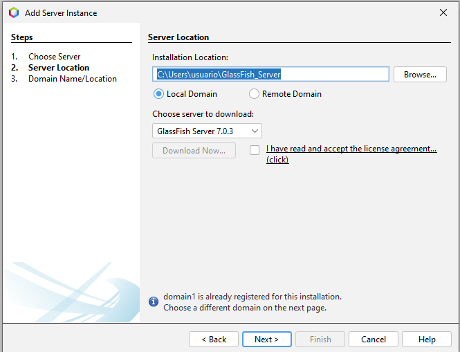
Se debe realizar un ajuste al archivo del GlassFish por ello se debe ingresar
en la carpeta WEB, dentro del archivo de “glassfish-resources.xml” se debe
modificar un parámetro.
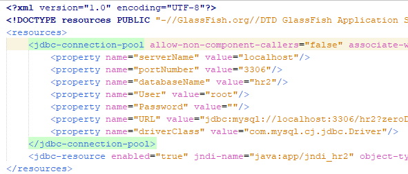
Se debe seleccionar en el apartado “value” copiar hasta el punto de Driver y
remplazar en el apartado de
“datasource-classname”
datasource-classname="com.mysql.cj.jdbc.MysqlDataSource"
En el apartado de “Source packages” se
crea el modelo MVC que será la arquitectura del proyecto, en este
apartado se crean los paquetes:
- Controlador
- Modelo
- Entidades (tablas de la base de datos)
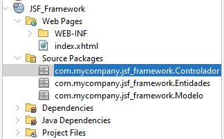
Se inicia el mapeo de la base de datos, para crear un mapeo de todas las
tablas de la base de datos y que sean entidades persistentes, para ello clic
derecho en el paquete “Entidades”.
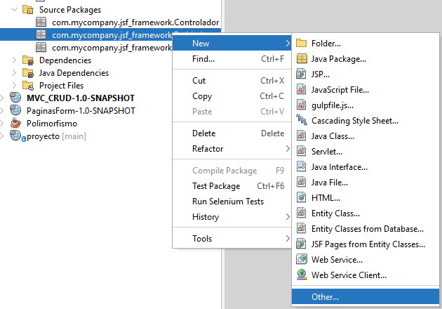
- El paquete necesario por lo general estará en la carpeta de
persistencias, pero en este caso se puede filtrar
- Seleccionar carpeta de persistencias
- Tipo de archivo “Entity Classes from Database”
- Data source: “New Data Source”
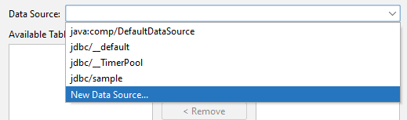
- Se escoge nombre del jndi y el conector va a ser el que ya se
creó previamente
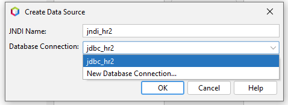
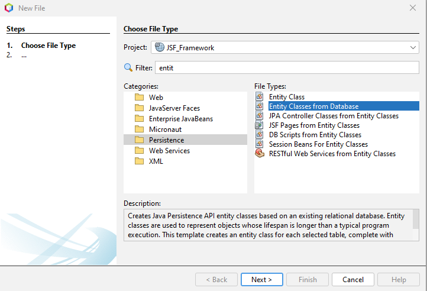
El programa nos traera todas las tablas que se encontraron en la base de
datos, ahora se selecciona “Add all” para que se agreguen todas las tablas
como entidades
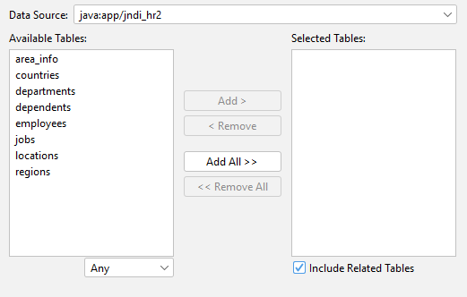
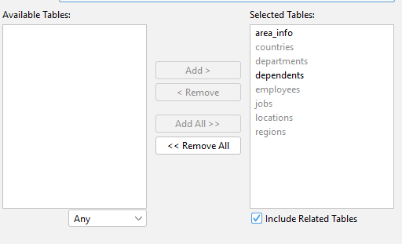
Las opciones preseleccionadas nos ayudarán en el proceso ya que las consultas
ya no se harán con sql si no jpql, y se manejara la persistencia de unidad
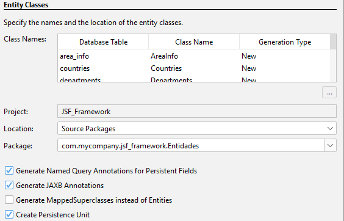
Se debe escoger el formato de asociación con la
base de datos en este caso se escoge “Lazy” debido a que no se estara
conectando todo el tiempo con la base de datos. En otro apartado en
“Collection” se colocar “java.util.List” para que nos traiga el formato en
lista todos los datos.
Las respuestas que se enviarán en HTTP se
mostrarán en formato xhtml o json.
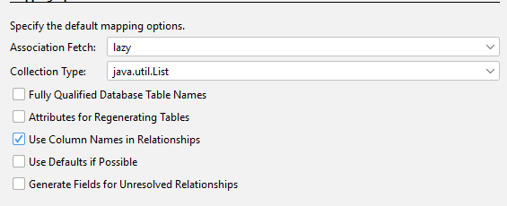
Mapeo en paquete modelo
Similar al mapeo que se hizo anteriormente seria de esta manera, esto busca
generar el objeto con sus métodos los cuales serán los del CRUD.
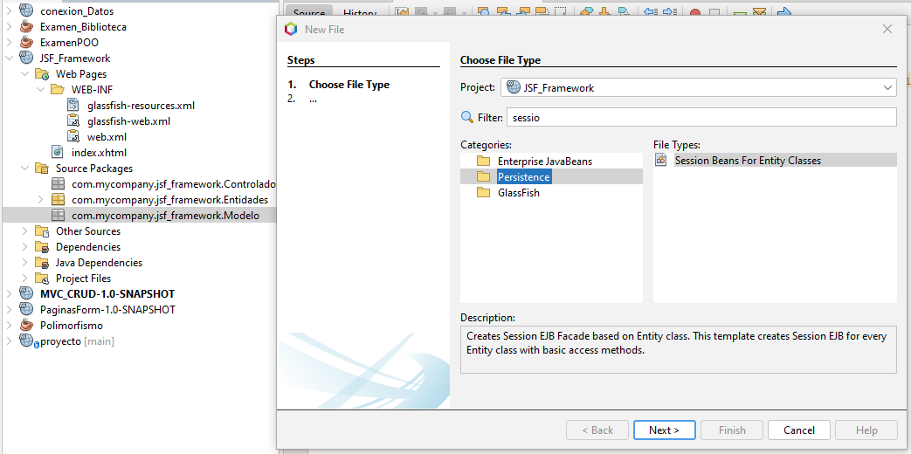
Nos muestra las entidades que se mapearon anteriormente y se deben agregar
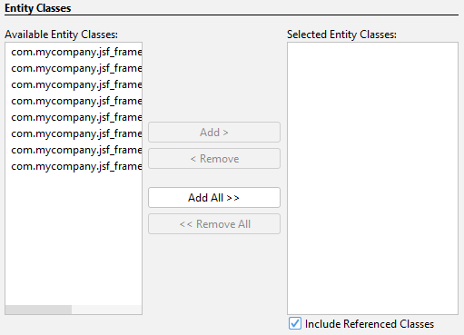
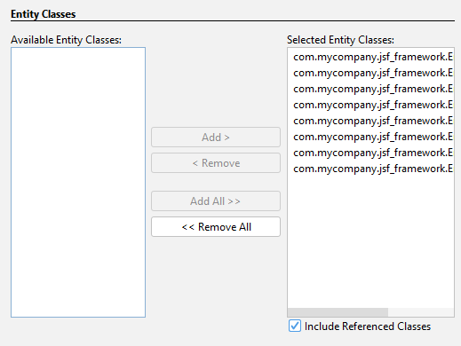
Driver
En este paso se empieza realizando la conexión de la base de datos desde la herramienta de Netbeans
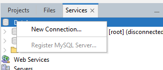Se crea un nuevo Driver previamente descargado en este caso se usa el destinado a MySQL
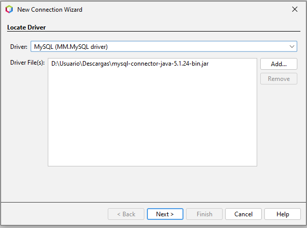Ahora colocar las credenciales las cuales se tienen acceso a la base de datos, en este caso es root
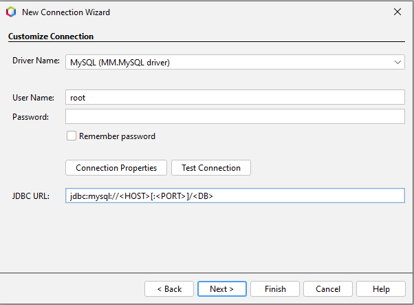En el apartado JDBC se colocar el HOST y el puerto donde está conectado, con el nombre de la base de datos más el parámetro “useSSL=false” y por último se prueba la conexión “TEST CONNECTION”.
En el siguiente apartado se cambia el input de la conexión con el nombre de la base de datos en este caso TCE
Se completa la conexión:
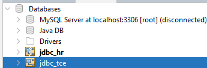En este apartado se crea un proyecto tipo Maven, se debe verificar que este usando el server Glass Fish, use el JDK 1.8 y por último se agrega el framework al proyecto, primer paso ir a las propiedades del proyecto
Para agregar el framework se selecciona en "Add" y escogemos "JavaServer Faces".
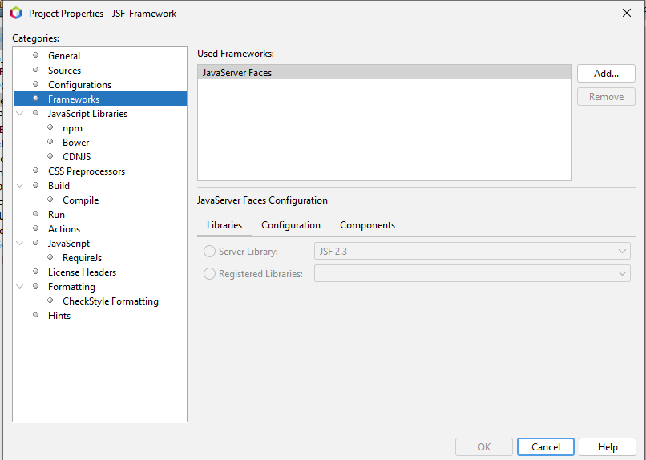En el apartado de “Libraries” se selecciona “Server Library” y en “Configuration” se borra todo y se coloca “*.xhtml”:
En el apartado de “Services” y “Server” hacemos clic derecho agregar servidor, se escoge GlassFish
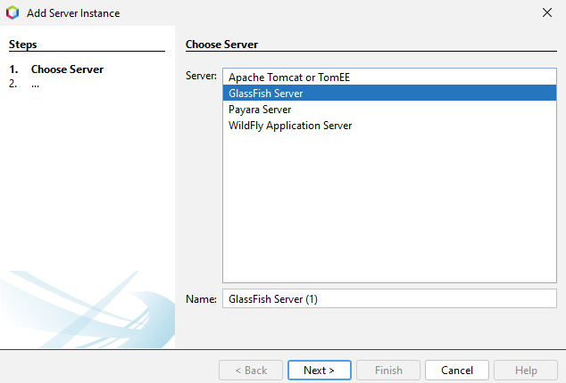Luego se escoge la versión de este servidor a descargar, se seleccionar “Downloand” para que descargue las dependencias. Luego nombre del dominio y se termina
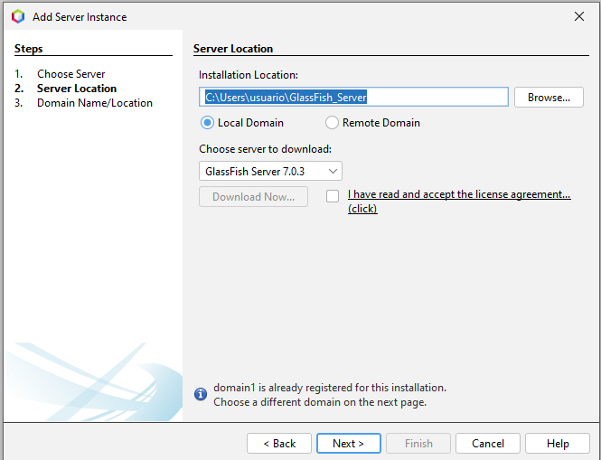Se debe realizar un ajuste al archivo del GlassFish por ello se debe ingresar en la carpeta WEB, dentro del archivo de “glassfish-resources.xml” se debe modificar un parámetro.
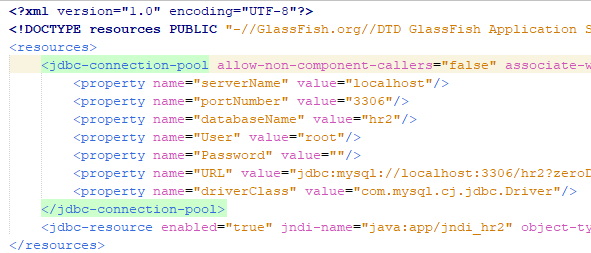Se debe seleccionar en el apartado “value” copiar hasta el punto de Driver y
remplazar en el apartado de
“datasource-classname”datasource-classname="com.mysql.cj.jdbc.MysqlDataSource"
En el apartado de “Source packages” se crea el modelo MVC que será la arquitectura del proyecto, en este apartado se crean los paquetes:
- Controlador
- Modelo
- Entidades (tablas de la base de datos)
Se inicia el mapeo de la base de datos, para crear un mapeo de todas las tablas de la base de datos y que sean entidades persistentes, para ello clic derecho en el paquete “Entidades”.
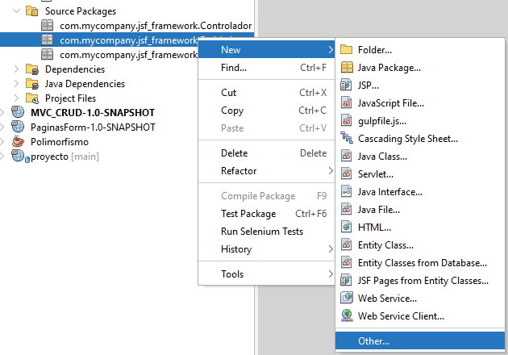- El paquete necesario por lo general estará en la carpeta de persistencias, pero en este caso se puede filtrar
- Seleccionar carpeta de persistencias
- Tipo de archivo “Entity Classes from Database”
- Data source: “New Data Source” 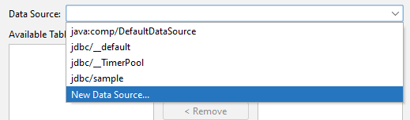
- Se escoge nombre del jndi y el conector va a ser el que ya se creó previamente 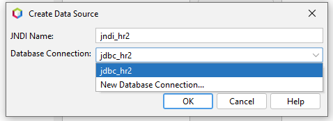
El programa nos traera todas las tablas que se encontraron en la base de datos, ahora se selecciona “Add all” para que se agreguen todas las tablas como entidades
Las opciones preseleccionadas nos ayudarán en el proceso ya que las consultas ya no se harán con sql si no jpql, y se manejara la persistencia de unidad
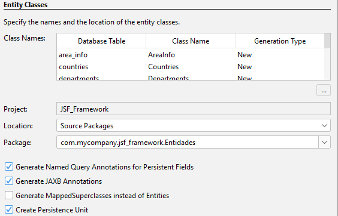Se debe escoger el formato de asociación con la
base de datos en este caso se escoge “Lazy” debido a que no se estara
conectando todo el tiempo con la base de datos. En otro apartado en
“Collection” se colocar “java.util.List” para que nos traiga el formato en
lista todos los datos.
Las respuestas que se enviarán en HTTP se
mostrarán en formato xhtml o json.
Mapeo en paquete modelo
Similar al mapeo que se hizo anteriormente seria de esta manera, esto busca generar el objeto con sus métodos los cuales serán los del CRUD.
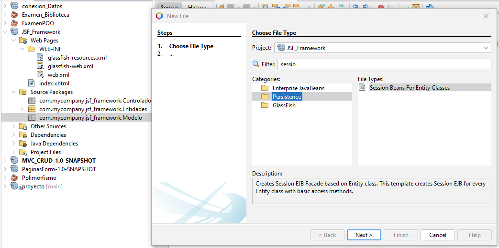Nos muestra las entidades que se mapearon anteriormente y se deben agregar